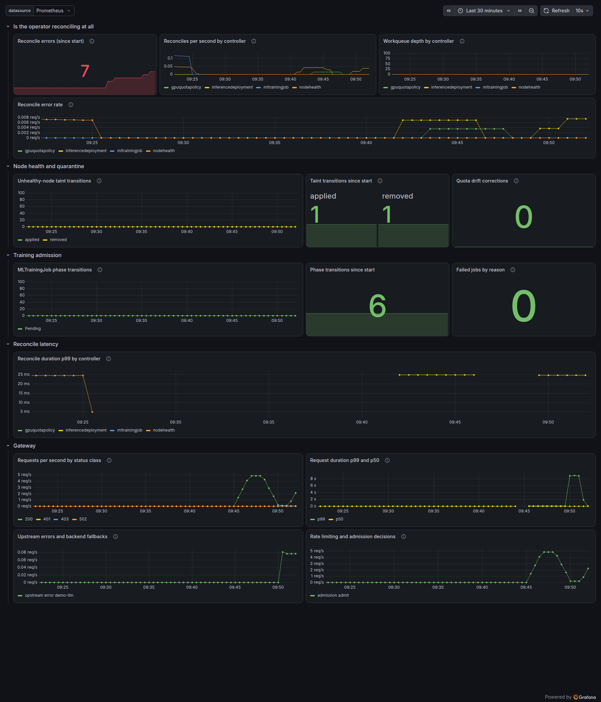

Scope. This is control-plane verification work on a Kubernetes operator and
gateway for multi-tenant GPU scheduling
(what the system is and why). Everything below runs on a local three-node
kind cluster against simulated nvidia.com/gpu capacity. No GPU here is
real, no production traffic has touched it, and the inference backend is a stub rather than vLLM.
What the experiments measure is how the control plane behaves, not how devices behave.
Over a week of that work I found ten defects. None failed a test, crashed a process, or returned a non-zero exit code. Nine were found by reading a result that looked correct; one was found by an artifact contradicting itself.
The ten#
scroll sideways for the rest
Three of these are worth the detail: an observability agreement that was a coincidence, a webhook that could make objects undeletable, and a lookup that could not be measured by the tests that covered it.
Terms used below#
- Operator: a controller reconciling four custom resources for training admission, serving deployments, node health and tenant quota.
- Workload: a Kueue object representing one job's claim on quota. Kueue creates it; the operator reads it to report admission status.
- Chaos run: a scripted fault injection with a steady-state gate that aborts if preconditions do not hold.
- Mutation: deliberately breaking a rule to confirm a test fails. A guard that nothing can break is not verified.
Case 1. An agreement that was a coincidence#
Invariant. Whatever the client experienced, the gateway's own counters show it. On-call sees the counters, not the client. A gateway whose metrics stay clean through an outage its users felt is a worse problem than the outage.
The experiment. Delete the pod behind a model backend. Sample the client's view while it happens. Compare against the gateway's Prometheus counters. The harness fails the run if the two disagree.
What it printed.
first error 49.1ms after the delete
recovered 3079.8ms after the delete
gateway 5xx: 9 client failures: 9I reported the nine-and-nine as the headline result. It was a coincidence.
The fault. gpuaas_gateway_requests_total is cumulative. The harness
read it once, after the run, and compared that absolute value against one run's client failures. They
matched once. I found out only because I had written "this experiment is n=1" in a validity table and
went back to close the gap:
run 1: counter = 15
run 2: counter = 23
run 3: counter = 31 while every run saw 9 failuresThe comparison had never been a comparison.
The fix. Record the counter before and after, compare the delta. Separately,
exclude client failures with curl code 000, meaning no HTTP response arrived at all.
Requiring a proxy to count a request that never reached it is an impossible standard, and that
exclusion accounted for the entire residual gap.
Evidence after the fix. Three runs, deltas matching exactly:
scroll sideways for the rest
What the recovery number is not. The window contains Kubernetes endpoint propagation, which this platform does not control. The gateway proxies to a Service, so it learns about the replacement pod exactly when kube-proxy does, and the two cannot be separated here. Across six runs recovery varied between 1.29s and 3.08s and I have not established why. The number I stand behind is the agreement, not the latency.
Guard. The record now carries requests5xxDelta alongside the
cumulative value, and the harness refuses the run if the client saw failures the gateway did not
account for.
Transferable point. A single run cannot test an agreement between two observers. At n=1, coincidence and correctness are the same picture.
Write-up with the mistake kept in · harness
Case 2. A webhook that could make objects undeletable#
Invariant. Admission control must never prevent a deletion from completing.
The context. The CRD schema accepts values the controller cannot act on.
+required means a field is present, not populated, so image: "" passes.
Worse, editing the image after the Job exists is stored by the apiserver, survives a reconcile that
reports no error, and changes nothing. A silent no-op is worse than a rejection, so I added a
validating webhook.
What I got right. The validator declines to intercept DELETE, and
the comment says why: a webhook able to refuse one could strand an object nobody can remove.
What I got wrong. The guard was on the wrong verb. A finalizer comes off with an
ordinary UPDATE. An object whose spec the validator rejects, such as an empty image on
something created before the rule existed, could never complete the update that ends its deletion.
The failure is quiet. kubectl delete succeeds, because it only stamps a timestamp.
The object then sits in Terminating with no error anywhere until somebody notices it
never went away. External code review caught this, not me.
The fix and its guard. Updates pass once DeletionTimestamp is set.
Two specs pin it, one against the validator and one through a real apiserver, plus a control asserting
the same spec is still refused on a live object. Removing the bypass turns both red:
admission webhook "vmltrainingjob.kb.io" denied the request:
spec.image: Required value: a training image is requiredTransferable point. I reasoned correctly about the danger and guarded the wrong operation. Reasoning about a risk is not the same as covering every path that reaches it.
Validator · apiserver-level tests
Case 3. A cost the test suite could not see#
Invariant. Tests exercise the path production uses.
Why nothing had been measured. The controller's scalability had never been
benchmarked. Before writing one I asked why, and the answer was the cause. The test suite built its
reconciler with a read-through client while production hands it the manager's cached one. Whether a
List consults an index or walks the store, and how that grows with object count, are
properties of the cache alone. Against a read-through client those questions do not exist. The cost
had not gone unmeasured; it had been unmeasurable.
What the benchmark found. A lookup on the path every training job takes on the
way in was O(N) in the number of queue objects sharing a namespace. With
MaxConcurrentReconciles at its default of 1, a per-item cost proportional to namespace
size drains the queue in O(N²).
scroll sideways for the rest
A control changed the diagnosis. Reading the code, I concluded a fallback branch was the problem. The benchmark included a second case that never reaches that fallback, and it grew linearly too. So the label selector narrowed nothing: the controller-runtime cache indexes fields, not labels, and applies a label selector by walking the store. Deleting the fallback would have left the lookup O(N) while I reported it fixed.
The fix. Both claims a queue object can carry, the job-uid label and its owner
references, go into one field index, so a single indexed List replaces a full label walk
plus a full namespace list.
Why the ratio is the weaker evidence. A 1503x speedup only says something got faster, which a warm cache also says. What a warm cache cannot explain: before the fix a miss cost about 20x a hit, and after it a miss is cheaper. A scan walks the whole store either way, so a miss can never come in under a hit. An index can, because the miss returns nothing to copy while the hit deep-copies the one object it matched. The inversion is the proof.
Transferable point. Evidence for a performance fix should be a change in shape, not a ratio.
Limits. Measured in envtest with the lookup isolated. Not measured under concurrent reconcile load, which is where the O(N²) claim would actually be demonstrated.
Benchmark, including why it stands up its own cache
The one defect a tool caught#
Nine of the ten needed a person to read the answer. One was caught by an artifact contradicting itself, and the difference is worth isolating.
A chaos harness reported latencies and also recorded its own measured sampling interval. After I fixed the timing logic on the injection path and not the recovery path, the next record said:
"harnessResolutionMs": 95.9,
"readyToUntaint": 37.9A measurement smaller than the resolution that produced it. Nothing failed. The document simply contradicted itself where a reader could see it, because the judgement criterion sat beside the measurement.
The sibling experiment had the same defect from the other direction: its sampling interval was a hand-written constant of 100ms, so a record showing three samples across 5.3 seconds sat next to the number 100 without any tension. A failing request blocks for its timeout, so the interval widens exactly when things break.
Measure the instrument every run and put the number in the artifact. A constant cannot contradict the data beside it.
The node-degradation experiment and its three instrument defects
Observability, and what pointing Prometheus at it found#
The operator and gateway export seventeen metrics. They had never been scraped. Connecting a Prometheus found that the operator was serving none of them.
A kustomize overlay I had written patched the manager's args with a strategic merge.
containers[].args is a list of plain strings with no merge key, so a strategic merge
replaces it, and the patch deleted --metrics-bind-address. Kustomize built, apply
succeeded, the Deployment rolled out, the webhook worked, and a live webhook verification passed 6/6.
None of those touch the metrics port.

Two panels were wrong on first render. The error stat read 2.26, because
increase() extrapolates across scrape boundaries and counting discrete events with it
yields fractions. A displayed value that cannot be true undermines every other number on the page. The
failed-jobs stat read No data where the answer was zero, and those are different
facts with only one of them good news.
A panel querying a metric that does not exist renders an empty graph, and an empty graph is how a healthy quiet period looks too. So panels are checked two ways: every expression must parse as PromQL, and every metric it names must exist in the Go source. Only the second catches a rename.
The alert rules that could not fire
The same question applies to alerting, and there it took three steps rather than one.
promtool check rules returned SUCCESS on all four rules, and I recorded that as the
alerting evidence. promtool validates the expression: the PromQL parses, the functions resolve, the
durations are well formed. It never queries the data. So I asked Prometheus how many series existed
for each metric the rules name. Two had none.
Both are registered in the Go source, so they exist as far as the code is concerned. Both are
Vecs written only by the KV-aware admission guard, and this gateway runs
--admission-mode=off. A Prometheus Vec with no observed child emits nothing
at all: no series, not a zero. So metric == 0 matched nothing, and both rules had been
permanently inactive since the day they were written.
With the guard switched off, that much is arguably correct. The defect underneath it is narrower.
GatewayAdmissionGuardBypassed exists to catch the guard silently failing open, and it
reads a series the guard itself publishes. The one failure it cannot see is therefore the guard not
running at all: a scrape loop that never started, a backend list that came back empty, a panic in the
goroutine. In each of those the series disappears, the rule goes quiet, and the quiet looks like
health.
The fix. A gauge that does not depend on the guard working.
admission_mode_active is set once at process start from the mode the gateway actually
resolved, so it is present before any request or scrape. That makes the missing case expressible:
(gpuaas_gateway_admission_mode_active{mode="kv-aware"} == 1)
unless on() gpuaas_gateway_backend_telemetry_freshunless on() drops the left side as soon as any freshness series exists, so the new
rule speaks only about total silence and leaves staleness to the original one.
Then one rule was driven to firing, because a rule that parses and has data still has not paged.
Removing the backend and holding 2.5 requests per second put
GatewayUpstreamErrorsReachingClients into pending at 06:31:51 and
firing between 06:36:35 and 06:36:55, against a declared for: 5m. The state
is polled every 20 seconds, so 5m04s ± 20s is as precise as this harness can be. Stopping at
pending would have proved less than it looks: pending says the expression
matched once, and a condition that flickers can stay there indefinitely without ever paging.
The rule checker now takes a Prometheus address and reports which referenced metrics have no series. It reports rather than fails, because a metric legitimately absent while its feature is switched off is the normal case here, and a red build for that teaches a reader to skip the check.
Dashboard checker · rule checker · the firing run · what the scrape path turned up
Reproducing this#
Everything runs on a laptop. No cloud account, no GPU.
# operator, webhook and cert-manager on a kind cluster
kubectl apply -k config/webhook-enabled
./hack/verify-webhook-live.sh # expect 6/6
# scalability, before and after the field index
go test ./internal/controller/ -run '^$' -bench BenchmarkGetWorkloadForJob -benchtime 30x
# the two chaos experiments
OUT=./ex/fr004.json ./hack/chaos-fr004-degraded-node.sh
OUT=./ex/fr002.json ./hack/chaos-fr002-serving-pod-killed.sh
# static checks that exist because of defects above
./hack/check-webhook-overlay.sh
./hack/check-dashboard.shEach chaos script aborts unless its steady state holds, so a run that starts is a run whose preconditions were checked. The records they write carry the harness resolution next to every latency.
What this establishes, and what it does not#
scroll sideways for the rest
Two of the ten defects came from external code review, which is its own argument for having one. The remaining gaps are ordered: queue behaviour under concurrent reconciles first, then alert routing past Prometheus, then real hardware.
Project overview · Source · engineering journal, written while the work happened rather than after it.